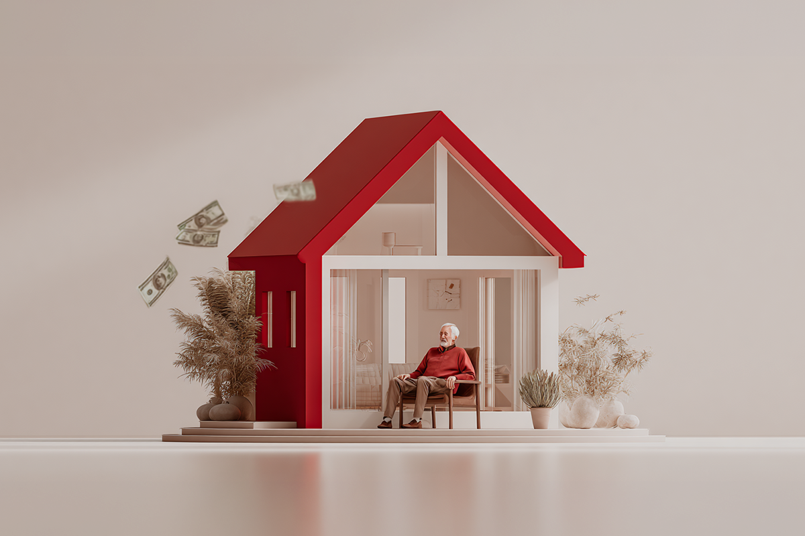

¿Tener una propiedad es sinónimo de una mejor vejez?
Con la hipoteca inversa, al parecer sí.
Con la hipoteca inversa, al parecer sí.

El término “economía plateada” ha ganado fuerza en los últimos años. Se refiere a toda la economía que rodea al segmento senior, es decir, mayores de 60 años. Ese periodo de años que antes se definía por ser “los últimos años de vida”, ahora ya no lo es tanto. Y es que durante los años noventa, la esperanza de vida aumentó más de seis años, alcanzando los 84 años en España y 80 en países latinoamericanos. Eso sí, ha ido disminuyendo a 78 años, por efectos de la pandemia.
Todo esto, que es una muy buena noticia, ha generado problemas, porque ni el mundo ni la economía estaban preparados. ¿Cómo hacer durar más las pensiones para tener una vejez digna? ¿Cómo preparar los sistemas de salud para poder recibir más años a sus pacientes? Son preguntas importantes que empiezan a surgir y que hay que poder responder.
Como respuesta a esto, en algunos países europeos está en tendencia un concepto que se llama “hipoteca inversa”. Acá te contamos de qué se trata.
Una hipoteca funciona básicamente tomando prestada plata del banco para pagar una propiedad. Mes a mes, vas pagándole al banco hasta que eventualmente se cumple el plazo y la casa o departamento es tuya.
¿Qué ha comenzado a pasar en algunos países? Muchos adultos mayores tienen malas pensiones, por haber vivido más años de lo esperado, pero sí cuentan con una propiedad que es 100% de ellos. Aquí viene la genial idea: ¿Por qué no venderle la casa al banco a cambio de una renta mensual? De ahí el concepto de hipoteca, pero inversa. No pagas tú, sino que ellos te pagan a ti.
El sistema es el siguiente: el banco o aseguradora te compra tu casa, calculando tu expectativa de vida según una serie de factores. Por ejemplo, te puede dar 15 años de vida y en base a eso calcula la renta mensual que te va a entregar. Durante ese tiempo, puedes quedarte viviendo en la propiedad. Si vives más de 15 años, ganas tú y pierde el banco. Si vives menos, gana el banco y le saca más rentabilidad a la propiedad. Es una apuesta inteligente.

¿Cuál es el gran “pero” que ha hecho que esto no despegue en ciertos países? La idea arraigada de querer dejar una herencia a los hijos. Para muchos adultos mayores, especialmente en sociedades mediterráneas y latinoamericanas, la casa no es solo un activo, sino un legado familiar.
En España, el producto vio la luz en 2019, impulsado por la aseguradora Caser. Desde entonces, han firmado solo 430 hipotecas de ese tipo y en 2025 fueron 187. Cuestionados, los adultos mayores responden que les complica no poder dejarle nada a sus hijos, sacrificando, en parte, su propio bienestar en la vejez.
Dicen los expertos, eso sí, que esta forma de pensar tiene fecha de caducidad. La European Pensions and Property Asset Release Group junto con EY lanzaron un informe sobre el crecimiento sostenido que va a tener este tipo de hipoteca en la próxima década. Se espera que el volumen global alcance los 50.000 millones de euros en 2035, frente a los 15.000 millones actuales.
La hipoteca inversa puede sonar una solución algo loca, pero pone sobre la mesa una pregunta bastante urgente: en una sociedad que vive más años de los que puede financiar, ¿tiene sentido llegar a la vejez siendo “rico en ladrillos” pero pobre en liquidez? ¿Estamos cuidando más el legado que dejamos, o la vida que todavía nos queda por vivir? Una discusión un poco incómoda, pero que está volviéndose inevitable.
Y para nosotros latinoamericanos, ¿te imaginas que en varias décadas más sea el banco el que te devuelva la hipoteca que hoy estás pagando?
 Finanzas
FinanzasSi últimamente has abierto LinkedIn, probablemente lo has visto: parece que todos hablan del “futuro del trabajo”.
 Finanzas
FinanzasChile no está en el Mundial 2026. Ya lo sabemos, ya dolió, ya hicimos memes tristes y nos resignamos a ver la Copa del Mundo desde la casa.
 Finanzas
FinanzasHace casi dos años me vine a vivir a Italia y llegué con una idea muy instalada en la cabeza: que todo iba a ser mucho más caro que en…